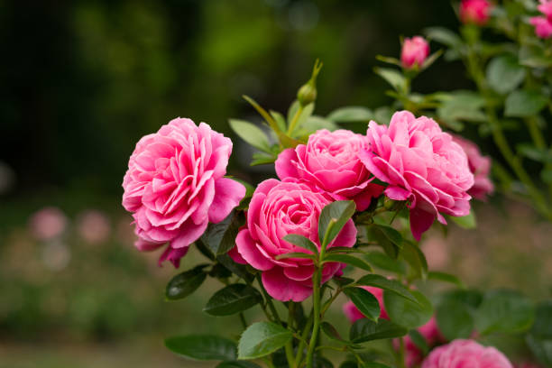

Roses
About Roses
One of the most prolific types of flowers, roses (Rosa spp.) are known as the "romance" flower. They bloom from late May through early fall. Roses grow on bushes and can be simple or difficult to grow, depending on the type and where they are grown. There are also many, many different types of roses, but are often grouped into three categories based on when they were introduced: old roses (introduced prior to 1867), modern hyrbid roses (introduced after 1867, the most common cut type of rose), and wild roses.
Growing Roses
Roses can be planted anytime, and they require full sun. Depending on the type, they can be freeze-hardy. It's important to remove old flower blooms so that they can bloom again. This process is called 'deadheading'. It's also important to water them thoroughly, especially in the summer.